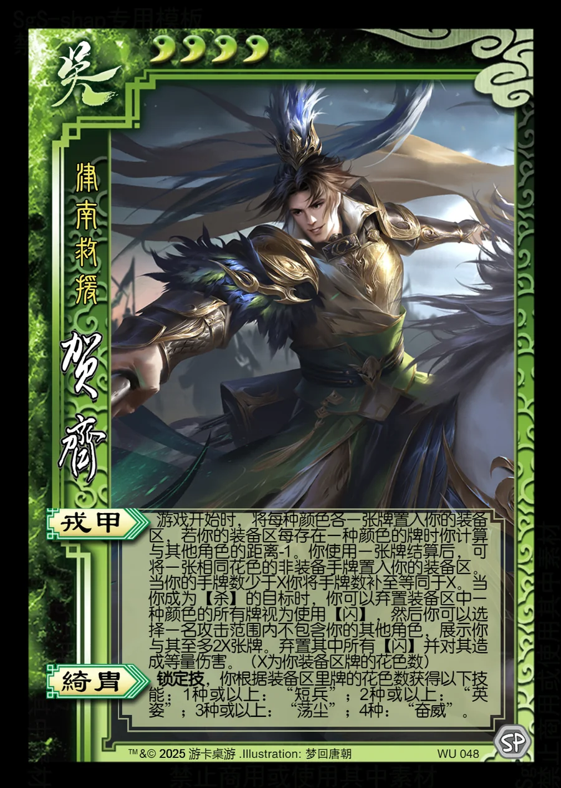

点击卡面查看大图
吴
贺齐
♥4津南救援
戎甲
游戏开始时，将每种颜色各一张牌置入你的装备区，若你的装备区每存在一种颜色的牌时你计算与其他角色的距离-1。你使用一张牌结算后，可将一张相同花色的非装备手牌置入你的装备区。当你的手牌数少于X你将手牌数补至等同于X。当你成为【杀】的目标时，你可以弃置装备区中一种颜色的所有牌视为使用【闪】，然后你可以选择一名攻击范围内不包含你的其他角色，展示你与其至多2X张牌。弃置其中所有【闪】并对其造成等量伤害。（X为你装备区牌的花色数）
绮胄锁定技
锁定技，你根据装备区里牌的花色数获得以下技能：1种或以上：“短兵”；2种或以上：“英姿”；3种或以上：“荡尘”；4种：“奋威”。